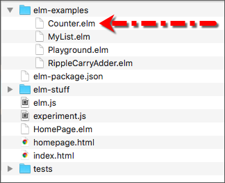
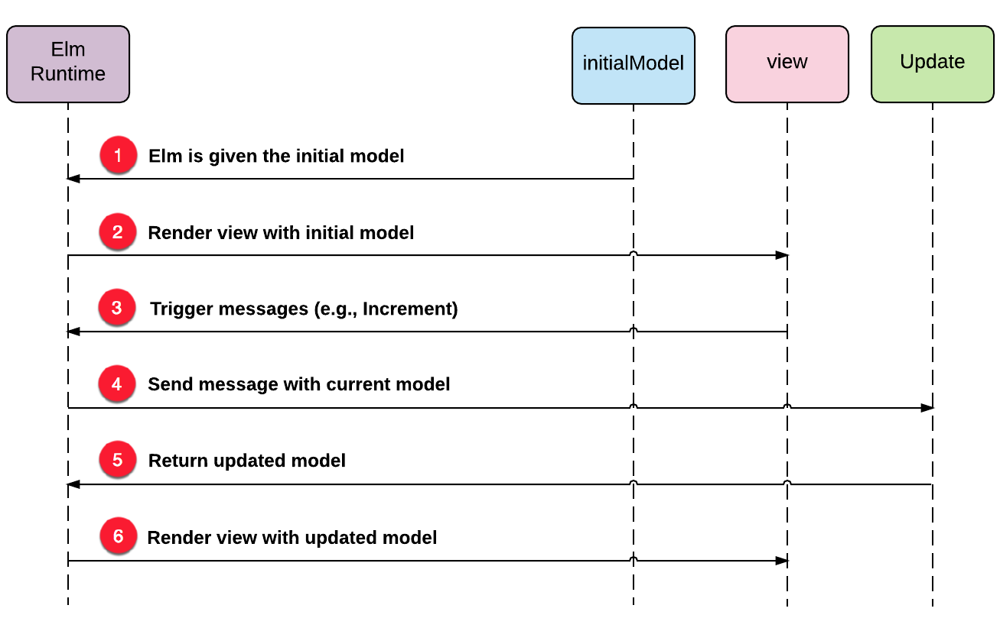

V každém časovém okamžiku potřebuje aplikace ukládat do paměti různé typy informací. Například potřebuje vědět, zda je uživatel přihlášen nebo kolik příspěvků již poslal. Entita state je něco jako repozitář pro ukládání všech těchto informací. Tento stav je dostupný různým datovým strukturám v aplikaci. Funkce s tímto stavem provádějí různé operace, ústící v novém stavu.
V sekci Čisté funkce jsme definovali stav jako něco, co reprezentuje všechny informace, k nímž má funkce v daném okamžiku přístup. Koncepčně pracuje stav aplikace stejným způsobem, jenom obsahuje mnohem víc informací.
Model
Stav aplikace reprezentujeme v Elmu něčím, co označujeme jako model. Model je jenom datová struktura, která obsahuje důležité informace o aplikaci. Představte si jednoduchou aplikaci, která umí zvětšovat čí zmenšovat stav počítadla o 1. Jediný stav, který pro tuto aplikaci potřebujeme sledovat, je aktuální hodnota počítadla. Takto vypadá definice modelu popsané aplikace:
type alias Model
= IntJe to pouhé označení typu Int. Model nemusí nezbytně být složitý. Všechno závisí na složitosti aplikace a na tom, kolik různých věcí je zapotřebí sledovat. U jednoduché aplikace počítadla, jediné co potřebujeme, je číslo, které nám říká, jaká je aktuální hodnota počítadla. Model je obecně definován jako alias typu.
Přidáme výše uvedenou definici modelu do souboru a počneme budovat aplikaci počítadla. Vytvořte nový soubor s názvem Counter.elm v adresáři beginning-elm/elm-examples.

Nyní vložte následující kód do Counter.elm.
module Counter exposing (..)
type alias Model =
IntVýše uvedená definice ještě nevytváří model. Pouze Elmu říká, jak náš model vypadá. Přidejte následující kód na spodek souboru Counter.elm.
initialModel : Model
initialModel =
0Výše uvedená konstanta 0 je to, co z naší definice vytváří počáteční model.
View
Dále potřebujeme prezentovat náš počáteční model uživateli. Přidejte následující kód na spodek souboru Counter.elm.
view : Model -> Html msg
view model =
div []
[ button [ onClick Decrement ] [ text "-" ]
, text (toString model)
, button [ onClick Increment ] [ text "+" ]
]Funkce view přijímá model a vrací kód HTML. Za scénou vytváří funkce div element HTML <div> a funkce button vytváří element <button>. Funkce text nepředstavuje žádný element HTML. Pouze zobrazí prostý text potlačením (escaping) speciálních znaků, takže jej vidíme přesně tak, jak jsme jej zadali v našem kódu.
První argument funkce div a button představuje seznam atributů. Druhý argument představuje seznam vnořených elementů. Kód Elmu ve funkci view je ekvivalentní následujícímu kódu HTML.
<div>
<button> + </button>
String representation of our model
<button> - </button>
</div>Funkce div, button a text jsou všechny definovány v modulu Html, který je součástí paketu elm-lang/html, jenž nám poskytuje úplný přístup k HTML prostřednictvím normálních funkcí Elmu. Potřebujeme tedy importovat modul Html do souboru Counter.elm.
module Counter exposing (..)
import Html exposing (..)
.
.Protože můžeme s elementy HTML zacházet jako s obyčejnými funkcemi, můžeme použít všechny pěkné věci, které Elm nabízí, rovněž na funkci view. Můžeme například vložit duplikátní kód do samostatných funkcí a opětovně je použít na různých místech naší aplikace. Můžeme napsat automatizované testy pro funkci view s použitím stejných nástrojů, které jsme použili při testování jiného kódu Elm. Kompilátor Elmu nás dokonce upozorní, uděláme-li v kódu view nějakou chybu.
Funkce view není zodpovědná za zobrazení HTML na obrazovce. Vše co dělá, je že přijme model a vrací porci HTML. Je to čistá funkce, která pro tentýž model vrací tentýž kód HTML. Pro vlastní zobrazení HTML na obrazovce používá Elm za scénou paket elm-lang/virtual-dom. O to, jak tento paket pracuje, se zatím nestarejte. Prozkoumáme jej podrobně v sekci Virtuální DOM později.
Adresář elm-lang/virtual-dom je dependence pro paket elm-lang/html, takže byl automaticky instalován, když jsme žádali elm-package aby instaloval elm-lang/html již v odstavci Vytvoření webové stránky sekce Začínáme.

Nepotřebujeme importovat do našeho kódu žádný z modulů, obsažených v paketu elm-lang/virtual-dom, protože bychom jej v našem kódu přímo použít neměli. Existují pouze jako podpora modulu, definovaného v paketu elm-lang/html.
Anotace typu pro funkci view naznačuje, že vrací hodnotu typu Html msg, což znamená, že kód HTML, generovaný funkcíview je schopen produkovat zprávy typu msg. Nestarejte se zatím, co to všechno znamená, vrátíme se k tomu záhy.
view : Model -> Html msgVstupní bod aplikace
Abychom mohli zobrazit "view", potřebujeme definovat vstupní bod naší aplikace. Přidejte následující kód na spodek souboru Counter.elm.
main =
beginnerProgram
{ model = initialModel
, view = view
, update = update
}Jako obvykle, funkce main slouží jako vstupní bod k naší aplikaci. Používá funkci beginnerProgram, definovanou v modulu Html aby poskytla nezbytné informace, potřebné pro runtime Elmu k zobrazení naší procedury "view" v prohlížeči. Již jsme definovali initialModel a funkci view. Definujme rovněž funkci update. Přidejte následující kód hned nad funkci main v souboru Counter.elm.
update : msg -> Model -> Model
update msg model =
initialModel
main =
...Funkce update vrací počáteční model. Později jej trošku rozšíříme do větší smysluplnosti.
Update
Naše aplikace je v této chvíli zcela nezajímavá. Tlačítka nic nedělají. Je to proto, že jsme neurčili, co se má stát při jejich stisknutí. Hned to napravíme.
Nejprve definujeme sdělení, která představují možné akce uživatele. Přidejte následující definici typu hned nad funkci update v souboru Counter.elm.
type Msg
= Increment
| Decrement
update =
...Nový typ Msg reprezentuje sdělení, na něž naše aplikace může reagovat. Je to jednoduchý sdružený (union) typ se dvěmi konstantami. Při stisku tlačítka + obdrží naše aplikace sdělení, zvané Increment; stisk tlačítka - generuje sdělení Decrement.
Termín "sdělení" (message) nemá v Elmu žádný specifický význam. Není to datový typ ani datová struktura. Mohli jsme docela snadno použít termín "akce" nebo "událost". Oficiální dokumentace Elmu ovšem preferuje termín "message".
Na rozdíl od datové struktury Model jsme nedefinovali Msg jako alias typu, protože není v Elmu žádný vestavěný typ, který by korektně představoval naše "sdělení". Datová struktura Model je pouhá celočíselná hodnota. Takže jsme vytvořili alias typu, který redefinuje existující typ Int. Mohl byste chtít vědět, proč jsme vůbec potřebovali definovat Model. Mohli jsme jednoduše v definici objektu initialModel nahradit Model přímo typem Int a "aktualizovat" anotaci typu funkce takto:
initialModel : Int
initialModel =
0
update : msg -> Int -> Int
update msg model =
initialModelVšechno by mohlo pracovat jako předtím. Což je pravda. Ovšem, označení hodnoty názvem Model činí náš kód mnohem přehlednější. V jednoduché aplikaci, jako je počítadlo, nejsou výhody pojmenovaných entit příliš zřejmé ale ve velkých aplikacích může být koncept dobře pojmenovaných domén, jako je Model, velkým přínosem z hlediska udržovatelnosti kódu.
Upravme funkci update aby zvětšovala nebo zmenšovala hodnotu modelu v závislosti na přijatém sdělení.
update : Msg -> Model -> Model
update msg model =
case msg of
Increment ->
model + 1
Decrement ->
model - 1Provedli jsme malou změnu v anotaci typu funkce update. Sdělení je nyní reprezentováno označením Msg místo msg, jež je pouze proměnnou typu. Na rozdíl od slova number nemá msg v Elmu žádný určitý význam. Mohli jsme v předchozí verzi použít jakékoli náhodné jméno k reprezentaci generického sdělení, třeba takto:
update : someMessage -> Model -> Model
update msg model =
initialModelNáhradou msg tvarem Msg jsme učinili funkci update mnohem restriktivnější. Nyní příjímá pouze dvě sdělení: Increment a Decrement. Předtím mohla přijmout jakékoli sdělení.
Vytvořili jsme mechanizmus pro ošetření sdělení ale stále nemáme nástroj, který je vytváří. Upravte funkci view tak aby generovala sdělení při stisku tlačítka + a -.
view : Model -> Html Msg
view model =
div []
[ button [ onClick Decrement ] [ text "-" ]
, text (toString model)
, button [ onClick Increment ] [ text "+" ]
]Typ sdělení se ve funkci view rovněž změnil z msg na Msg. V předchozí verzi nevytvářelo HTML, vracené funkcí view, žádné sdělení a to v důsledku použití msg. Nyní tato funkce používá funkci onClick z modulu Html.Events ke generování sdělení typu Msg.
Importujte modul Html.Events v souboru Counter.elm.
module Counter exposing (..)
import Html exposing (..)
import Html.Events exposing (..)
.
.Obnovte stránku na http://localhost:8000/elm-examples/Counter.elm a měl byste mít možnost zvětšovat (increment) a zmenšovat (decrement) stav počítadla. Na platformě Windows ovšem s mnohem menší parádou - zobrazí se pouze tlačítka a stav počítadla.

Závěr
Elm Architecture se v podstatě redukuje na tyto tří části: Model, View, a Update. Na celou aplikaci lze pohlížet jako na motorek, který přijímá počáteční model, prezentuje jej uživatelům, umožňuje jim vytvářet sdělení, podle nichž je model aktualizován a obratem prezentován zpět uživateli.

Obrázek dole ilustruje interakci mezi runtime Elmu a různými komponentami v naší aplikaci.

Anotace funkce main
Nevím, zda jste si všimnuli, že jsme definici funkce main nedoplnili anotací jejího typu. Zeptejme se Elmu, jaký by to měl být. Smažte adresář build-artifacts uvnitř adresáře beginning-elm/elm-stuff a v adresáři beginning-elm zadejte tento příkaz v terminálu:
elm-make elm-examples/Counter.elm --output counter.js --warnJak bylo již zmíněno v sekci elm-make, flag warn aplikaci elm-make říká aby chybová hlášení doplňovala varováními. V příkazu nesmí chybět název výstupního souboru v JavaScriptu (counter.js). Jinak by elm-make přepsal soubor beginning-elm/index.html.
Pokud se v našem kódu od poslední kompilace nic nezměnilo, elm-make žádnou rekompilaci neprovádí. Smazáním adresáře build-artifacts jej k rekompilaci donutíme. Bez rekompilace se varování nezobrazí.
========================= WARNINGS ==============================
---------------- missing type annotation ------------------------
Top-level value `main` does not have a type annotation.
29| main =
^^^^
I inferred the type annotation so you can copy it into your code:
main : Program Never Model MsgZkopírujte anotaci typu z varování hned nad funkci main v souboru Counter.elm.
main : Program Never Model Msg
main =
beginnerProgram
.
.Tento trik můžete použít i příště, když nebudete umět určit anotaci funkce z její implementace. Funkce main nemá pouze jeden určitý typ. V sekci Organizace kódu měla funkce main typ Html.Html msg.
main : Html.Html msg
main =
MyList.isEmpty list1
|> toString
|> Html.textV sekci Fuzz Testing měla typ TestProgram.
main : TestProgram
main =
run <|
describe "Test suite"
[ RippleCarryAdderTests.allTests
, FuzzTests.allTests
]Funkce main v podstatě přebírá typ výrazu, který vrací. Již víme, co Html.Html msg a TestProgram znamenají. Program Never Model Msg znamená program Elmu, který má model typu Model a přijímá sdělení typu Msg. Typ Never sděluje, že při spuštění programu nejsou zadány žádné hodnoty. V sekci Ports uvidíme příklad, který nám ukáže jak zadávat hodnoty při inicializaci programu.
Shrnutí
V této sekci jsme se dozvěděli, že se Elm Architecture redukuje na tři základní koncepty: Model, View a Update. V následující sekci si povíme, jak používat paket "virtual dom" a čím nám může být užitečný. Zde je pro kontrolu celý kód aplikace "counter":
module Counter exposing (..)
import Html exposing (..)
import Html.Events exposing (..)
-- Model
type alias Model =
Int
initialModel : Model
initialModel =
0
-- View
view : Model -> Html Msg
view model =
div []
[ button [ onClick Decrement ] [ text "-" ]
, text (toString model)
, button [ onClick Increment ] [ text "-" ]
]
-- Update
type Msg
= Increment
| Decrement
update : Msg -> Int -> Int
update msg model =
case msg of
Increment ->
model + 1
Decrement ->
model - 1
-- Entry point
main : Program Never Model Msg
main =
beginnerProgram
{ model = initialModel
, view = view
, update = update
}